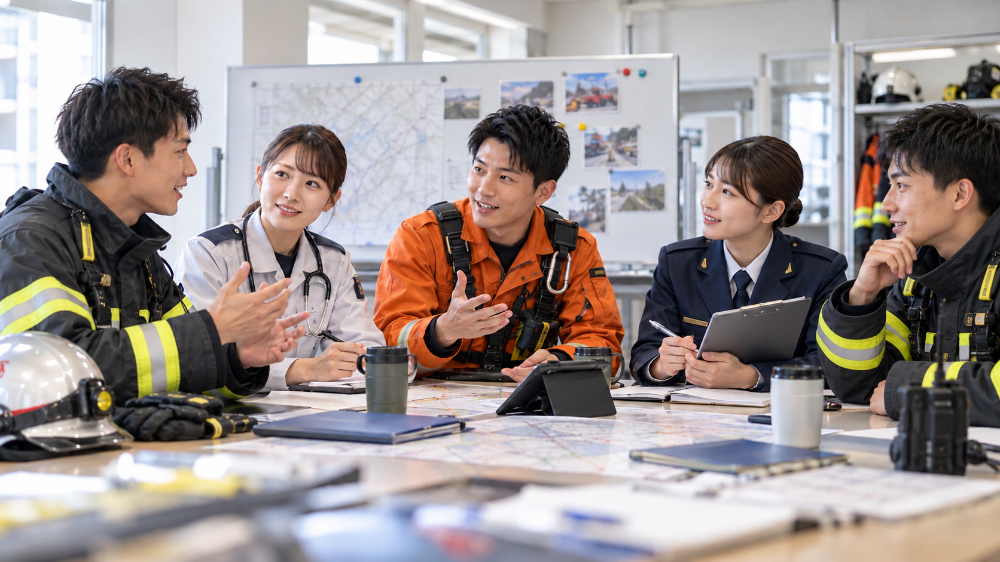

記事００２ 若手消防士５人に聞いた本音
リアルな悩みと、未来への希望

「人の命を助ける仕事がしたい」
そんな思いで消防の世界に入った若手消防士たち。憧れの仕事に就いた一方で、実際の現場では、消防学校では学びきれなかった悩みや迷いにも直面します。 今回は、若手消防士５人の声から、仕事のリアルとこれからの消防について考えます。
01 「現場に出ると、頭が真っ白になることがあります」
消防隊・23歳／採用2年目
訓練ではできていたことでも、実際の火災現場では緊張して思うように動けないことがあります。 先輩たちは状況を見ながら自然に動いているのに、自分は次に何をすればいいのか分からない。その差を感じると、焦ります。 でも最近は、活動後に先輩と振り返ることで、少しずつ周囲を見る余裕が出てきました。 「昨日より一つできることを増やす。それでいいと思っています」
02 「分からないことを、もっと気軽に聞けたら」
救急隊・25歳／採用4年目
救急は毎回状況が違います。医学的な知識も必要なので、勉強しても「これで十分」という感覚はありません。
一番悩むのは、先輩への質問です。
忙しそうなときに聞いていいのか迷ったり、「そんなことも知らないのか」と思われないか不安になったりします。
「質問しやすい雰囲気があるだけで、若手はかなり成長しやすくなると思います」
03 「仕事も大切。でも、自分の生活も大切にしたい」
救助隊・27歳／採用6年目
消防の仕事は好きです。もっと技術を身につけたいし、救助隊員として成長したいと思っています。
一方で、24時間勤務や訓練が続くと、家族や友人との時間をどう確保するか悩むこともあります。
「消防士だから仕事を最優先するのが当たり前、という考え方だけでは続かない時代だと思います」
仕事への責任と、自分の生活。その両方を大切にできる職場になってほしいと感じています。
04 「新しいやり方を提案するのは、少し勇気がいります」
予防課・26歳／採用5年目
消防には長年積み重ねられてきた方法や文化があります。それには理由があると思います。 ただ、書類作成や情報共有など、「もっとデジタル化できるのでは」と感じる場面もあります。 スマートフォンやクラウドを使えば効率化できそうでも、若手から提案するのは少し勇気が必要です。 「昔からの方法と新しい技術を、うまく組み合わせられたらいいですね」
05 「自分も、後輩に声を掛けられる先輩になりたい」
消防隊・29歳／採用8年目
新人の頃、失敗して落ち込んでいた自分に、先輩が「次にできればいい」と言ってくれたことを今でも覚えています。 当時は、その一言にかなり救われました。 今では自分にも後輩ができました。 「技術を教えるだけでなく、困っているときに声を掛けられる先輩になりたいです」 自分がしてもらったことを、次の世代につないでいきたいと思っています。
若手の声が、消防を変える 訓練、人間関係、働き方、DX、後輩指導。
若手消防士が抱える悩みはさまざまです。
一方で、その悩みや違和感の中には、これからの消防をより良くするヒントもあります。
経験豊富なベテランと、新しい価値観や技術を持つ若手。
世代を超えて互いの考えを共有することが、これからの消防組織には求められているのかもしれません。
若手の声から、消防の未来を考える。
119Lab.は、現場で働く消防士たちのリアルな声を伝えていきます。